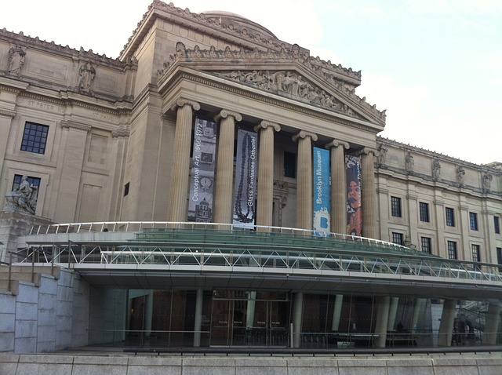
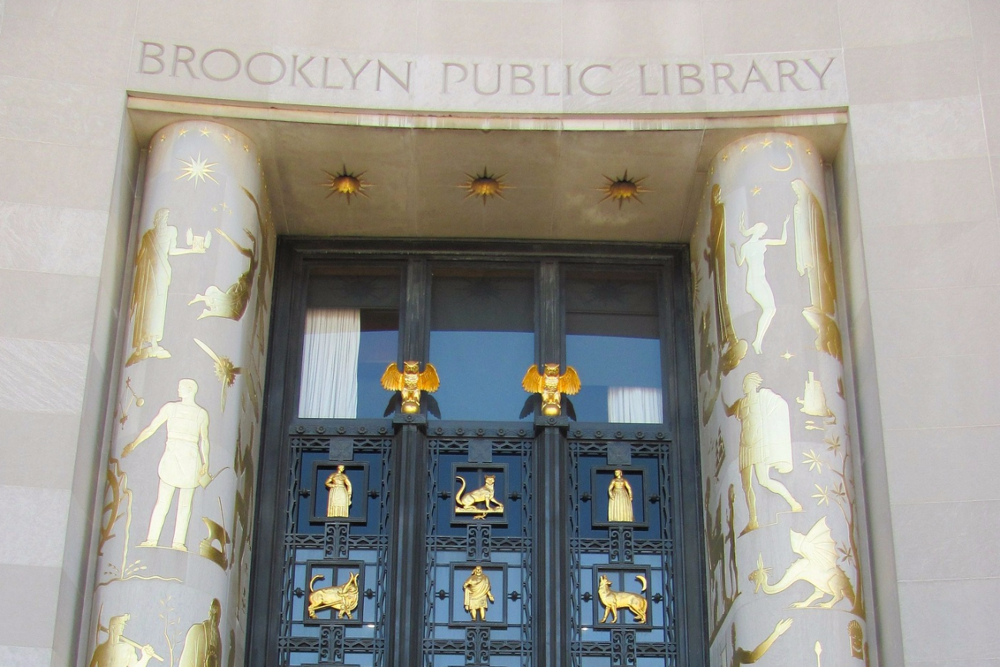
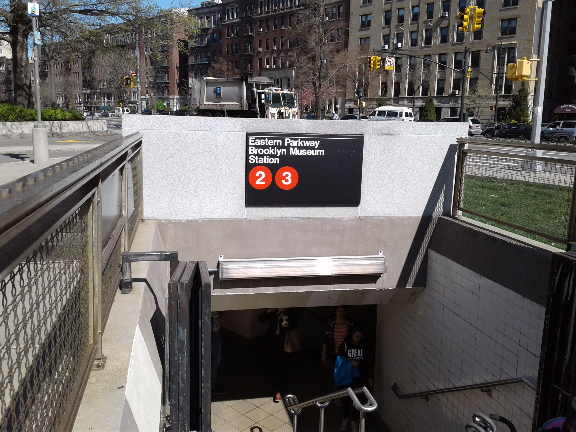

Prospect Heights Brooklyn
Some call it Park Slope, Park Hill Side, and others Prospect Hill. Prospect Heights Brooklyn is about a square mile in size. The neighborhood is on the Northwest of the New York City borough of Brooklyn and is small compare to the other neighborhoods in the borough. The Interior portion of the neighborhood consist mostly of brownstone style residential rowhouses, some built as early as 1890.
Its the home of the Brooklyn Museum Arts, Central Library of the Brooklyn Public Library, Brooklyn Botanic Garden, Mount Prospect Park which shared a common parcel of land with the other cultural institutions. There is also the Barclays Center, the home of the Brooklyn Nets basketball team and New York Islanders hockey team play their home games, is a relatively new addition to the neighborhood and bringing something of a big-city feel to the area. 
The Brooklyn Museum Arts is the third largest in New York City and hold a collection of 1.5 million works. Its collections includes antiquities especifically Egypitian Collections spanning 3000 years. American art is represented starting from the Colonial period. African, Oceanic and Japanese art make for notable antiquities as well. The Brooklyn Museum change it ’s name in 1997 to Brooklyn Museum of Arts.
The Booklyn Central Library open its door in 1941. It ’s regarded as one of America greatest Art Deco buildings.
Booklyn Botanic Garden was founded in 1910, and it ’s a garden within a garden. One of its speciality is the cherry tree which as over 200 cherry
trees of Asian varieties.
The Brooklyn Botantic Garden was founded in 1910. The garden holds a speciality garden with the garden. Some of their speciality are the Cherry trees, the Cranford Rose Garden and mant others. It have about 900,000 visitors a year.
Cultural Diversity
The Diversity in the neighborhood can be found throughout, In 1910 through 1950 they were Jewish, German, Italian and Irish. Today you can find mostly whites and blacks. The 1990 census population stats 43,435 18% were of caribbean origin. In 2014 the census population stats 19,600 residents 58% white, 29% black and 8% Asian. This will increase to 34,000 occuring to the American Community Survey Census Bureau because of the Altantic Yard (Pacific Park Brooklyn condominium project) in 2025.
- Soldiers and Sailers Memorials Arch- Grand Army Plaza, Completed in 1892 architect John H. Duncan and dedicated to the men who fought in the Union Forces during the Civil War.
- Public School 9 Annex - built in 1895 to alleviate overcrowding. It is located at the corner of Vanderbilt Avenue. architect James W. Naughton.
- Co-Cathedral of St.Joseph, Roman Catholic Diocese of Brooklyn- built in 1912 located at 856 Pacific Street between Vanderbilt and Underhill Avenue.
- Brownstone Houses- built 1890- they are many such row of houses that lines various street such as Lincoln and ST. John Place between Underhill and Washington Avenue.
Historic Landmarks
- Joan Rivers (1933-2014), comedian, writer, television host
- Foxy Brown (1978- ), rapper
- Michael Moss (1955- ), Pulitzer Prize winning author
- Montego Glover (1974- ), actress
- Ingrid Michaelson (1979- ), singer/songwriter
- Isa Chandra Moskowitz (1973- ), vegan chef, cookbook writer and host of "The Pink Punk Kitchen," which is filmed in Prospect Heights
- Matt Berninger (1971- ), Vocalist
- Clara Bow (1905-1965), actress
- Fannie Borach aka Fanny Brice (1891- 1951), Actress/singer
- Charlie Calls (1924- 2011), Comedian
Notable Residents
Prospect Heights, where historic meets Brand New
Take a walk north bound from the historic Eastern Parkway at the shared land of Brooklyn Museum, Brooklyn Botanic Garden
and the Brooklyn Central Library through the gateway of the Grand Army Plaza,
Soldiers and Sailors Arch west Flatbush Avenue to the controversial Atlantic Yard which as now renamed Pacific Park Brooklyn, to see the Barclays Center which opens its doors in 2012.
Over 6000 new rental apartments and condoniniums to be built as part of Pacific Park. The population is expexted to grow almost 34,000 by 2025 form 19,600 in 2014 based on the census Bureau.
Some of the old history of Prospect Heights as already be converted to new condos, like the Old Store garage at 280 Saint Marks Avenue to a four story condos.
Others are the 1927 New York Daily News printing plant at 535 Dean street new condos, Spalding Ball factory (manufacturing of pink rubber balls)- apartments are in its place. Built in 1900 Public School 9 Annex on Sterling Place and Vanderbilt a Renaissane Reivival building. Glass Apartment building by Richard Meier at Grand Army Plaza and cafe and restaurant along the neighborhood main street.
Restaurants and Bars
The main strips of Vanderbilt and Washington Avenues offer a mix of bodegas and inveterate neighborhood standbys next to a new spate of hipster-centric restaurants and bars. Toms Restaurant located at 782 Washington Avenue has been serving breakfast and lunch since 1936. Whipping up some Corned Hash and Egg Combo, Apple Walnut Pancakes and Meatloaf sandwiches and some of meals you will find on their menu. One review claim the reason for them to be in business so long is the free sample and the good sausage.
Joyce Bakeshop bakeshop establish only in 2006, just over ten years as become a neighborhood fixture. They bake their pastry fresh in house and serve breakfast and lunch. You can find then at 646 Vanderbilt Avenue.
Where to eat and drink
The night scene in Prospect Heights is currently booming, and Bar Sepia is one of our favorits. Located at 234 Underhill Avenue, it opens from 4pm to 2am Monday thur Thrusday and to 4am on the weedends. A reviewer in the New York Nightlife “It has a laid back small-tab bar thrives in the shadow of Richard Mieier’s tower, serving up tasty mojitos, draft beers and local gigs. There are patio seats in the back and wi-fi all day long.”
Washington Common Bar located at 748 Washington Avenue as a review from Yelp “Its perfect for a quiet date, a solo drink or a large crowd for a rowdy time, it accommodates all. Nothing fancy, you can bring your own food, happy hour $2.00 off everything. The bartenders are really cool too and typically play great music.”
The Best Bars Near Prospect Heights
Looking for a day of shopping from grocery to clothing, you can find most of the retail businesses on Vanderbilt and Washington Avenues. There are others throughout the neighborhood but, they two Avenues are the commerical hub for businesses. No need to travel into Manhattan or other neighborhoods, there is a variety right in Prospect Heights.
Other Retail Business
Best Bets in Prospect Heights
Bike routes-Vanderbilt Avenue has a broad bike lane running from Prospect Park to Forte Green Nineteenth-century brownstone town houses- walk along Vanderbilt and Carlton Avenue, Bergen Street and Park Place. See historic Public School 9 Annex.
Brooklyn Botanic Garden located at 990 Washington Avenue. Current Events for all. Cherry Blossoms at BBG and more Brooklyn Botanic Garden
Kids Discovery stations: Tuesday-Friday 10:15am-12.15pm April 11 thru June 2, 2017 Get your hands dirty at Kids Discovery Stations throughout the garden. Investigate and classify plants, touch a carnivorous plant and learn how it eats, or go on a monarch and milkweed exploration in the meadow.!
Sakura Matsuri 2017 at BBG April 29-30 at 10am-6pm Sakura Matsuri offers 60 events and proformances that celebrates traditional and comtemporary Japanese cultures.
In the heart of the Botanic Garden they are spaces for weddings and celebration, there are The Palm House which can accommodate up to 275 guests and The Atrium which can accommodate up to 130 guests. More info on BBG Visit
Telestory: free video visitation program that brings storytime for families separated by incarceration.
Bike the Branches 2017: May 20- is a one day event geared toward helping you discover Brooklyns diverse neighborhood, breathtaking views. For more info: Brooklyn Public Library
Urban Art Jamm: Hosted by the brooklyn youth council Ages 13-19 will showcase and celebrate NYC teen Artists.
Georgia O’keefee: Living Modern- now until July 23, 2017. Experience the artist’s exhibited wardrobe, shown alongside key paintings photographs. learn more Brooklyn Museum
The West Indian Day parade along Eastern Parkway on labor day from the neighboring Crown Heights to Prospect Heights ending behind the Booklyn Museum is a great attraction every year. Full of cultural diversity and colors, this is not to be miss.
The Barclays Center is home of the Brooklyn Nets and the New York Islanders host home games here. Additional to these games just announced One and One with Paul McCartney playing September 19. Your can also be entertain by Chris Brown and Barabara Streisand, just to throw a few name out there. There is entertainment for all ages.Barcleys Center
Celebs, Film Fiction
The award winning TV workplace sitcom Brooklyn Nine-Nine, starring Andy Samberg, is modeled on the real life of is the actual 78th Precinct building at the corner of Sixth Avenue and Bergen Street, one block south of the Barclays Center and one block east of the Bergen Street station on the New York City Subway’s 2 and 3 train routes.
The truth is stranger than fiction drama is captured in the 2011 advocacy film Battle for Brooklyn. “The film attempts to show the unjust outcomes that are possible when money interests partner up with government entitiesto out weight the rights of citizens.”
Mapping Prospect Heights Experience
MTA subway lines 2, 3, 4, 5, B, Q, D, N and R train serves the Atlantic Avenue and Barclays Center station, other stops 2, 3, takes you Bergen Street, Grand Army Plaza then Eastern Parkway. The Eastern Parkway stop with the 2 or 3 train is the heart of the historic Brooklyn Museum, Brooklyn Botanic Garden, Brooklyn Public Library and you can also see the Soldiers and Sailers Memorials Arch. The Long Island Rail Road stops at the Atlantic Terminal. There are also the buses B45, B48, B65, B69 and B71 that run through the neighborhood. By car approach from Flatbush Avenue or Atlantic Avenue.
